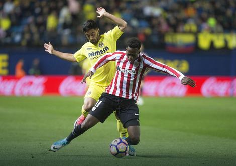
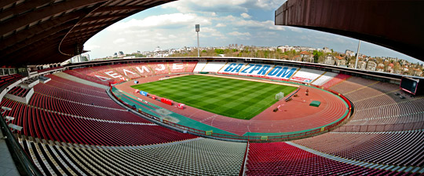
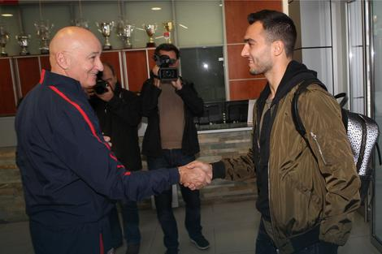

-
BUNDESLIGA Strelac Gaćinović čuva Ajntraht!

U režiji Mijata Gaćinovića! U 28. kolu Bundeslige, Ajntraht je na svom terenu remizirao sa Verderom (2:2), a prvi gol za tim iz Frankfurta delo je našeg reprezentativca.pročitaj više
-
ISKORAK KA LIGI ŠAMPIONA Viljareal "torpedovao" Bilbao

U susretu dve ekipe koje se nalaze na mestima koja vode u Ligu Evrope, "žuta podmornica" uspela je da efikasnom igrom na startu drugog poluvremena stigne do tri boda i primakne se Ligi šampiona..... pročitaj više
-
"LEGENDE MARAKANE" On je dao prvi gol na stadionu Zvezde!

U novoj emisiji serijala „Legende Marakane“ u produkciji fudbalskog kluba Crvena zvezda o svojoj bogatoj karijeri govorio je strelac prvog gola za crveno-bele na novoizgrađenoj "Marakani" - Dušan Maravić... pročitaj više
-
KOCKICE SU SE SLOŽILE Ivan Obradović za Blicsport: Muslin ima odlične ideje, konačno je došao selektor sa autoritetom

Pouzdani levi bek Anderlehta zna kako je igrati na Mundijalu. Uz Ivanovića, Kolarova, Stojkovića, Rukavinu i Zorana Tošića, prošao je uspešno kvalifikacije za Svetsko prvenstvo u Južnoj Africi 2010... pročitaj više
|
-
"NOVI SALAH" STIŽE U SRBIJU Evo zašto je Egipćanin Anter interesantan Partizanu i Voždovcu

Bliži se kraj fudbalskog prvenstva, klubovi već razmišljaju o pojačanjima za sledeću sezonu. Kako saznajemo, Partizan i Voždovac su se zainteresovali za usluge krilnog napadača Mohameda Antara, 24-godišnjaka iz Egipta.... pročitaj više
-
"POSEBNI" MU VERUJE Lingard ostaje u Junajtedu do 2021. godine

Fudbaler Mančester junajteda Džes Lingard produžio je ugovor sa tim klubom do 2021. godine i mogao bi da zarađuje 100.000 funti nedeljno, preneo je "BBC".... pročitaj više
-
PARTIZANOVA UZDANICA Marko Janković za Blicsport: Da pobedimo prvo Radnik, pa Zvezdu

Crno-beli Mesi posle perioda sa kombinovanom minutažom ustalio se u ekipu „parnog valjka“. Mladi crnogorski virtuoz priželjkuje još bolje partije i još jači Partizan.... pročitaj više
-
USKRŠNJI TURNIR U BARSELONI Sanjamo da budemo kao Mesi

Još se prepričava gest dečaka iz fudbalskog kluba Barselona koji su nakon ubedljive pobede protiv japanske Omnije na prošlogodišnjem Svetskom čelendž kupu, umesto da slave, tešili i grlili uplakane protivnike. Oko 400 dečaka iz beogradskih škola fudbala imaće priliku da uče od najboljih i pokažu da su najbolji.... pročitaj više
|